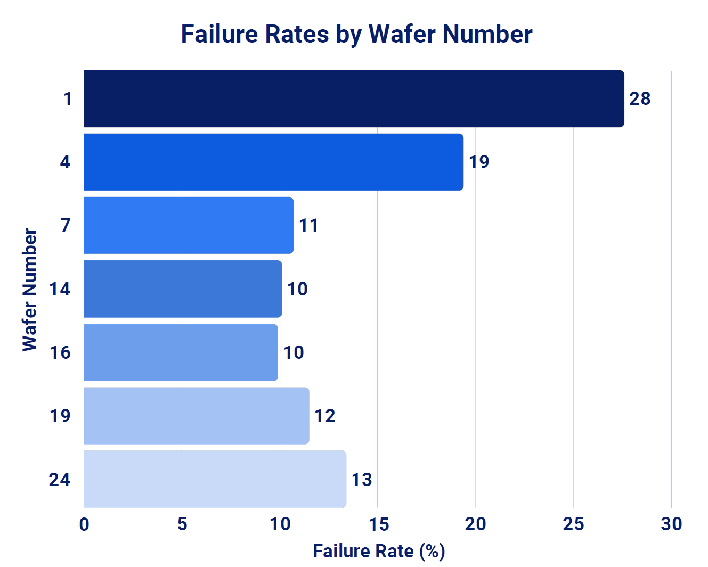
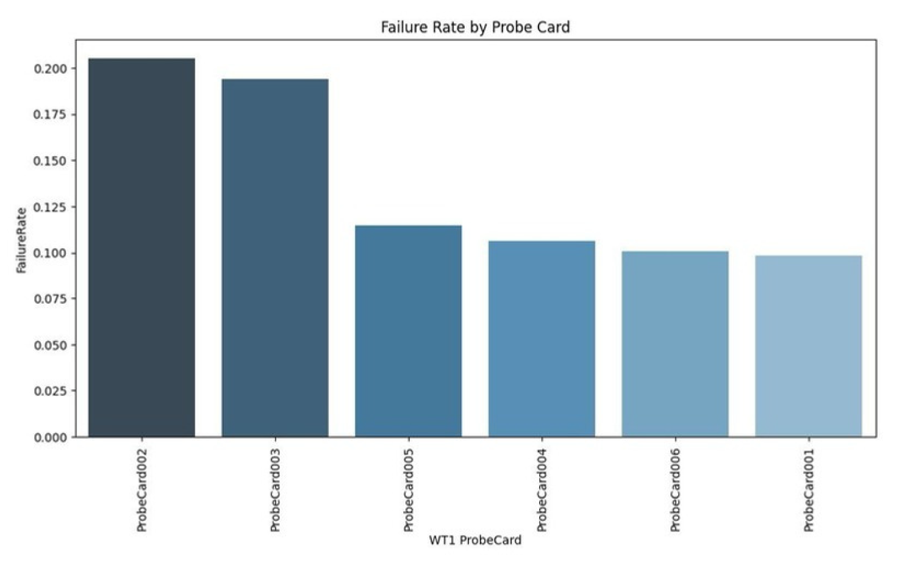
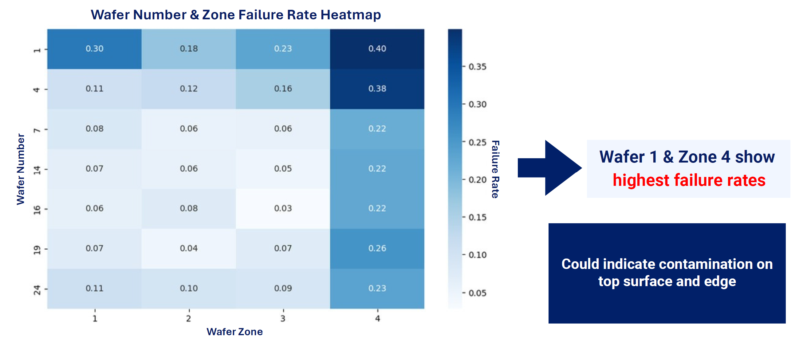
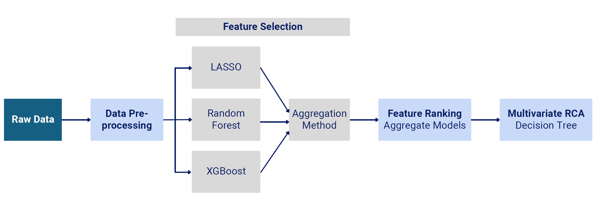
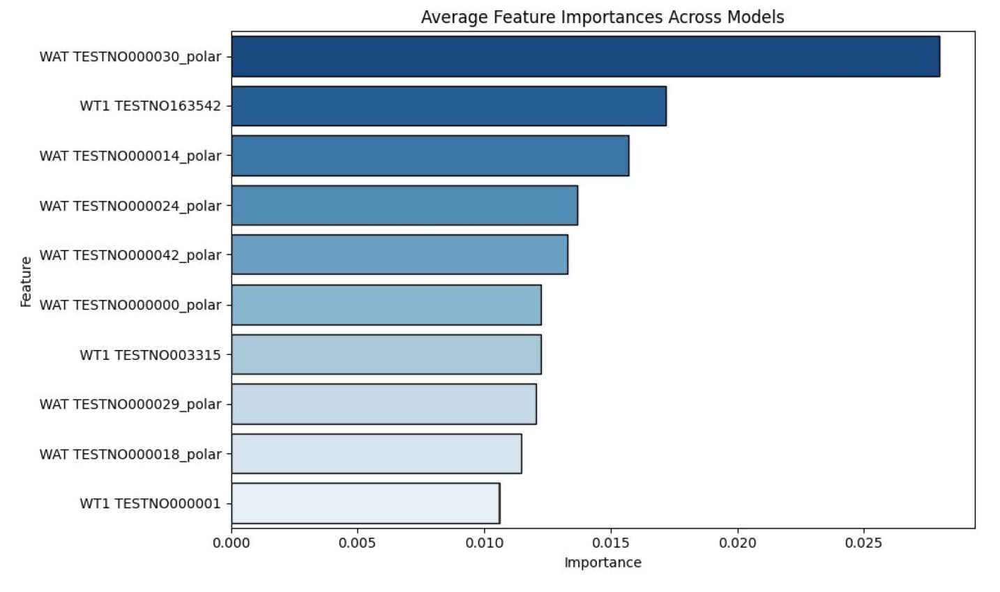
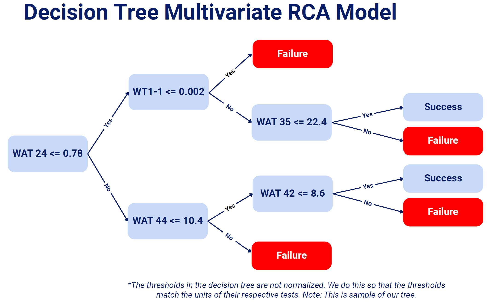

Root Cause Analysis for Semiconductor Manufacturing Failures
Built a multivariate machine learning pipeline for Renesas Electronics to identify the electrical test signals most predictive of Category C wafer failures and generate interpretable threshold-based root cause rules for engineering investigation.
Problem
Renesas observed a persistent rise in Category C failures and needed a more scalable root cause analysis approach than traditional univariate inspection. The goal was to identify the electrical tests most associated with wafer yield loss and translate those signals into rules engineers could act on.
The workflow used WT1 and WAT electrical tests, wafer and lot identifiers, probe card IDs, and die-level labels from a single internal dataset so the analysis remained reproducible.
Approach
The pipeline combined preprocessing, model-based feature ranking, aggregation across three methods, and an interpretable decision tree for multivariate RCA.
Preprocess Data
Filter Category C failures, remove high-missingness features, handle structured missingness, and adjust for class imbalance.
Feature Selection
Train Lasso, Random Forest, and XGBoost under cross-validation and hyperparameter tuning.
Aggregate Rankings
Normalize and average feature importance scores across the three models to reduce model-specific noise.
Top 50 Features
Select the most stable and influential electrical tests for final RCA modeling.
Decision Tree RCA
Generate threshold-based rules that define high-risk regions in test space.
Key Findings
Category C dominated yield loss
Category C accounted for about 73% of probe-stage failures, making it the primary yield limiter.
First-wafer instability
Wafer Number 1 showed roughly 28% failure rate, substantially higher than later wafers.
Probe card variability
Probe Cards 02 and 03 had the highest failure rates, pointing to hardware-driven yield distortion.
Top predictive signal
WAT Test 30 Polar emerged as the strongest overall predictor after aggregating the feature rankings.
Selected Visuals
These visuals come from the sponsor presentation and highlight the most important operational findings and model structure.

Exploratory analysis revealed that Wafer 1 and 4 exhibited the highest failure rate.

Comparison of failure rates across probe cards shows measurable variation in defect rates, suggesting that testing hardware conditions may influence observed failures during wafer testing.

Spatial analysis across wafer zones highlights elevated failure rates in Zone 1 & 4, indicating potential contamination or process instability near wafer edges.

A multi-model feature selection pipeline combining LASSO, Random Forest, and XGBoost was used to identify the most predictive electrical tests associated with failure events.

Feature importance scores were aggregated across multiple models to generate a stable ranking of electrical tests most strongly associated with Category-C wafer failures.

An interpretable decision tree root-cause analysis model was constructed to trace combinations of electrical test thresholds that lead to wafer failure outcomes.
Business Recommendations
- Introduce warm-up or dummy runs to reduce first-wafer instability.
- Implement structured probe card health monitoring.
- Use high-importance WAT and WT1 tests as targeted engineering investigation anchors.
- Expand future models with spatial, equipment, and process variables.
- Build integrated infrastructure for repeatable multivariate RCA deployment.